En el siguiente artículo hablaré sobre como contribuir en el blog de Python Barranquilla. Para colaborar en el blog de la comunidad es necesario que tengas conocimientos previos en:
- Lektor
- Git y Github
- Markdown
- virtualenvs (esto es opcional).
El contenido de este artículo se encuentra dividido en 2 secciones importantes:
- Cómo usar el panel de administrador de Lektor
- Cómo hacer el Pull Request (o PR, coomo se le conoce por su sigla) al repositorio de PyBAQ.
Teniendo esto claro, empecemos a detallar el paso a paso de cada una de las secciones.
Como usar el panel de administrador de Lektor
Clonar repositorio
Editar el sitio web de python Barranquilla puede realizarse en un panel gráfico, para ejecutarlo es requerido clonar el proyecto de nuestra página web e instalarlo localmente usando:
git clone https://github.com/PyBAQ/django-quilla-web.git
Una vez hayas clonado el repositorio e instalado lektor en tu computador, debes correr el servidor local usando lektor server -f webpack.

Creación de una entrada en lektor
Ahora, ingresamos a la URL http://localhost:5000 y verás el sitio web en tu navegador.
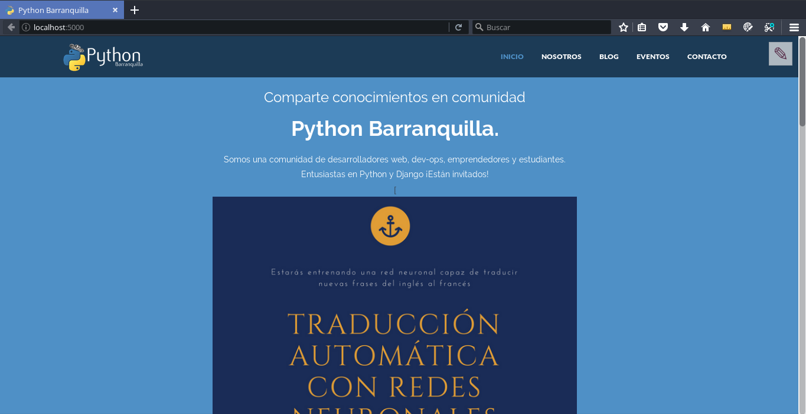
Se navega hacia la página que se quiere editar, para nuestro caso se navega hacia blog y se presiona el botón editar.
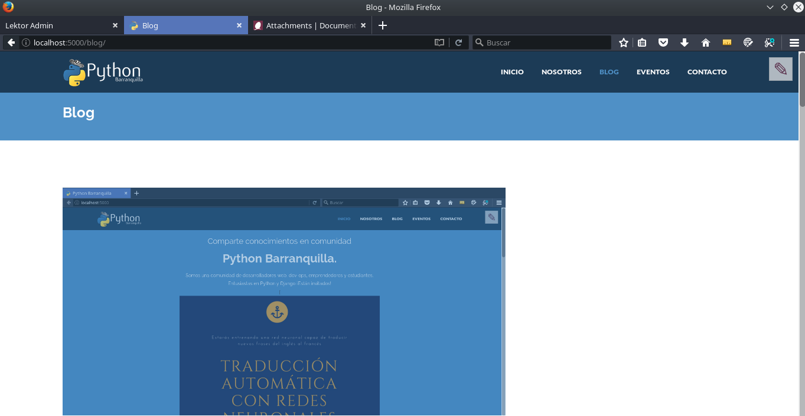
Luego nos dirigimos hacia la parte superior derecha y presionamos un botón con forma de lápiz.

Al presionar el botón, se cargara el panel administrativo para editar la página del blog.
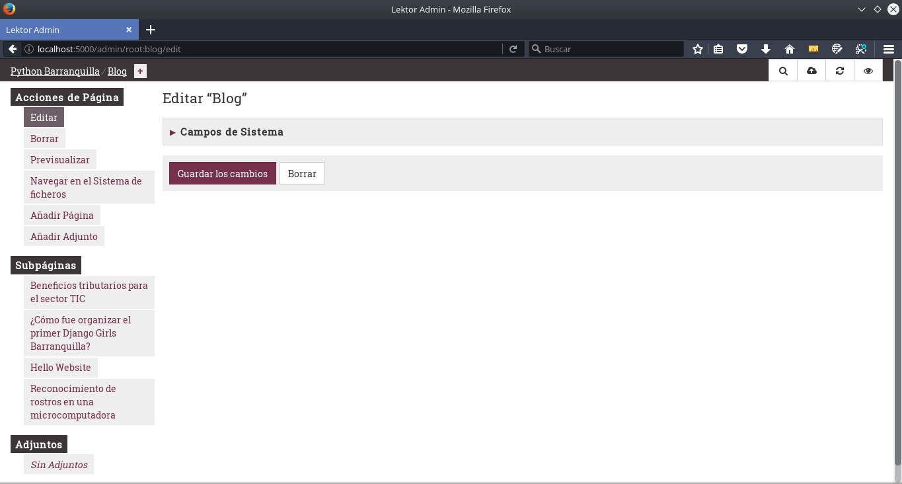
Para proceder con la creación de la entrada se ingresa el título y el slug

Luego se completa el resto de la información

Title: Se refiere al título de la entrada.
Author: Nombre legible de la persona que escribe el artículo.
Twitter_Handle: Tu nickname en Twitter.
Publication_date: Fecha en formato YYYY-MM-DD con la fecha actual.
Excerpt: Resumen corto que se visualiza en el listado del blog.
Body: Contenido central del artículo.
El articulo original tenía estas isntrucciones, ahora (2024) se maneja de manera diferente vea Imágenes
Anexos
Para Cargar las imágenes se presiona el botón Añadir Adjunto Ubicado en la barra lateral.
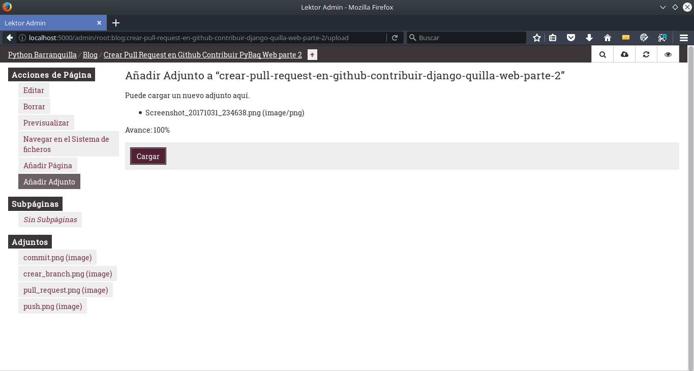
Como paso final si se suben multiples imágenes, para que solo muestre una de las imágenes cargadas como anexos, se debe seleccionar la imagen y marcarla como oculta seleccionando la opción ¿Debería estar oculta esta página? y desactivar Si esto está habilitado la página puede ser detectada, en caso contrario la URL ha de ser conocida.
Una vez terminada la redacción se puede visualizar el artículo en el administrador.
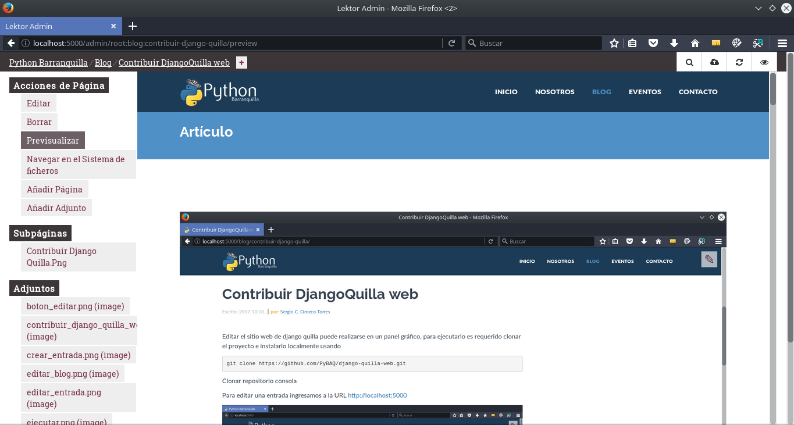
También podrás verlo finalizado en el blog.
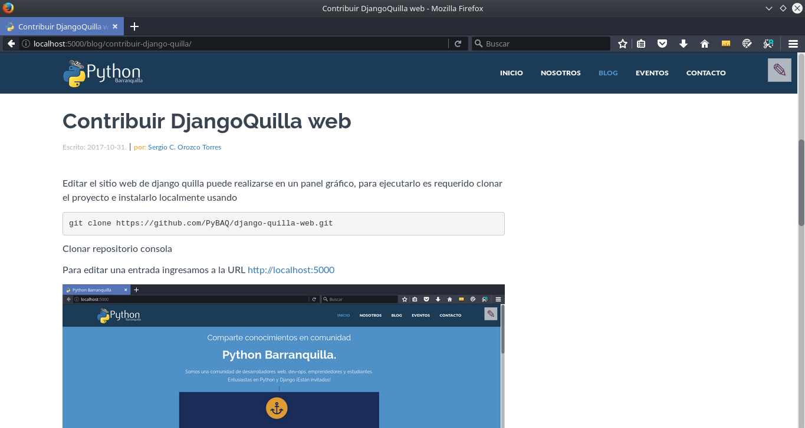

Imágenes
Para añadir la imagen principal del artículo, simplemente adjuntala usando el boton Add Attachment o Añadir Adjunto. El programa mostrará la imagen en ese directorio como imagen principal del articulo.
Todas las demás imagenes las deberas incluir en la siguiente carpeta:
/assets/img/posts/[año]/[slug-del-articulo]/
las deberás agregar como links a la carpeta img directamente, abajo un ejemplo de esta misma página:

Como hacer el Pull Request al repositorio de PyBAQ.
Pull request
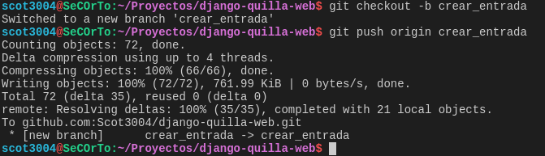
Para aceptar los cambios que los miembros de la comunidad realizan, se efectuá un control de los diferentes commits. Para poder realizar un commit es necesario que la persona este acostumbrada a las diferentes operaciones de git como lo son add y commit (ver Anexo 2).
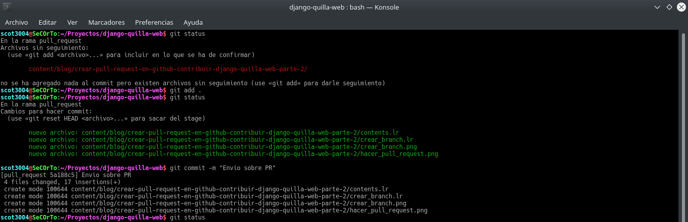
Como ultimo paso en el terminal, hacemos un envió de los elementos a subir, verificando la rama en la que se encuentra git en el momento, ademas de corroborar la rama remota en la que se subirá
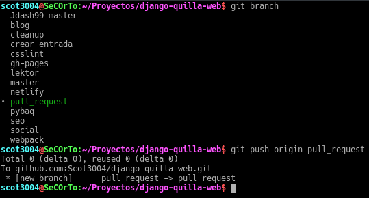
Y en la interfaz de git se procede a hacer el Pull Request final, para pasar los cambios a aprobación
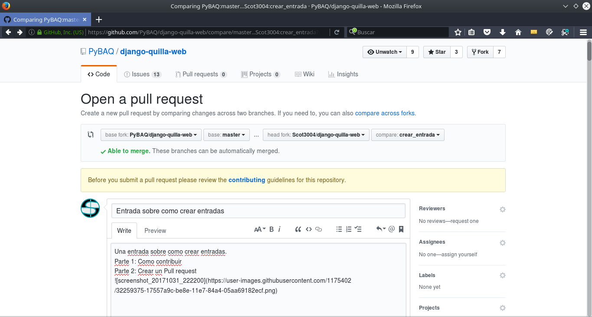
Espero que haya sido de ayuda mi artículo. Si ven que hay secciones de esta entrada que se pueden mejorar, por favor escríbanme un comentario o un issue en Github etiquetando mi usuario @Scot3004.
Nota del Editor:
Para las personas que está empezando, les dejamos en el artículo enlaces hacia las herramientas que necesitan aprender para hacer sus contribuciones. Enseñar y explicar a los demás es una muy buena forma de aprender muchísimo más ¡Ánimo!
Atte, Javier
Anexo 1: Como instalar Lektor
Como instalarlo y algo de contexto.
¿Qué es Lektor?
Un sistema de gestión de contenido estático potente y flexible para crear sitios web complejos y atractivos a partir de archivos planos – para personas que no desean hacer concesiones entre un CMS y un motor de páginas estáticas.
¿Como instalarlo?
En la página web de Lektor se explica como instalarlo. Si tiene algún problema acceda al discord de la comunidad y pida ayuda.
¿Como se usa?
Para entender un poco como se usa Lektor, le recomendamos crear su propio proyecto siguiendo la guia de inicio rapido de Lektor. Nos gustaría brindar mas ayuda, pero en este caso la documentación ya está escrita. Si el inglés no es lo suyo, puede traducir la página con google.
Anexo 2: Ciclo de trabajo de Contribución en Github
Para poder contribuir a proyectos de código (abierto o cerrado) debemos entender lo básico de Git, Github y la importancia del control de versionamiento en proyectos de codigo. Contribuir a nuestro blog es una manera de ganar esa experiencia.
Entendiendo el flujo de trabajo
El flujo de trabajo para contribuir a PyBAQ es el mismo de casi todos los proyectos de software: pull request. En la lista abajo verá con ilustraciones como trabajar con Github (la plataforma web). Esa interacción se hace usualmente con Git (la herramienta que hace el control de version). Freecodecamp tiene una buena guia para principiantes
- Pull/Fork: Crea una copia del repositorio en tu cuenta de GitHub.
- Branch: Crea una rama con un nombre relacionado a la contribución que harás. 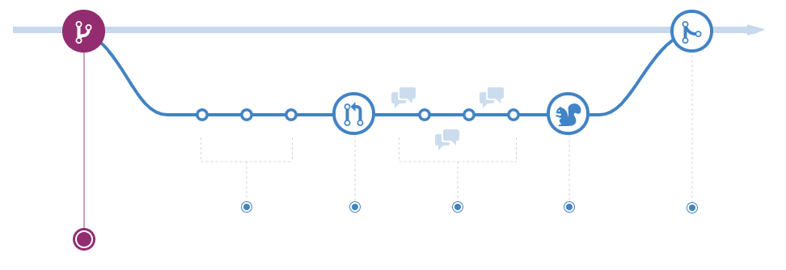
- Commit: Realiza los cambios en el código. Por ejemplo: redacta un nuevo articulo. Guarda los cambios en esa rama (branch) y guardalos haciendo un commit.
- Push: Envía los cambios que has vinculado a la rama a tu repositorio. 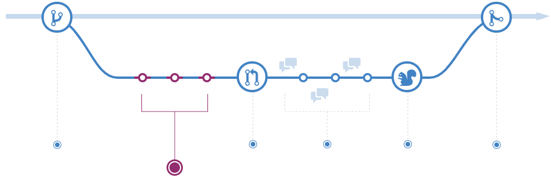
- Pull Request: Has una solicitud de inclusión de tu código en la pagina.

- Discuss: Discute los cambios que has introducido con los dueños del repositorio original. Si hay cambios solo debes realizarlos repitiendo los pasos 3 y 4; el pull request abarcará los commits que hagas a esa rama hasta que sea aceptado.

- Rebase + Merge: Ver en articulo original.

Si tienes bases de Git, pero no te gusta mucho la linea de comandos o no te sientes cómodo(a) aún, existe también Github Desktop.